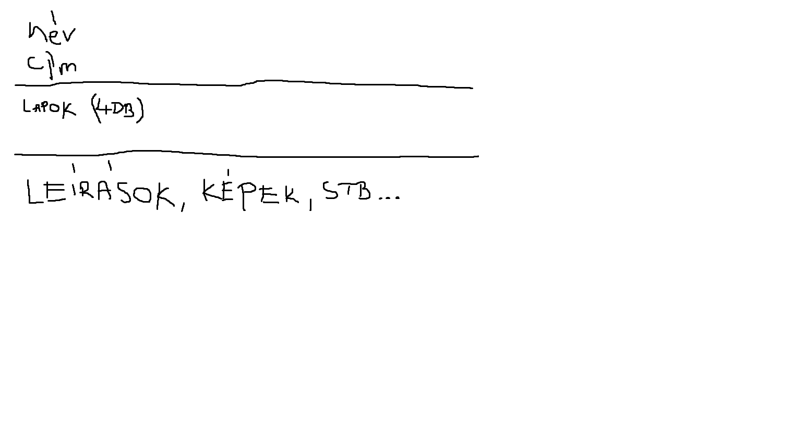
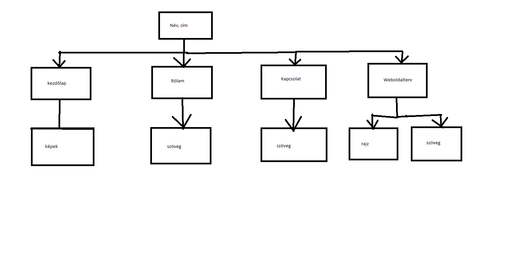

Láng-Miticzky Dániel
Portfólió
A weboldal elkészítése
Az eredeti koncepció rajzai:


A portfólió elkészítése egy egyszerűbb változatban nem okozott problémát számomra. A korábbi évek videói, illetve néhány internetes kiegészítő segítséggel könnyen abszolválható volt a feladat. Változtatásként egy szebb hátteret raknék be talán a weboldalra, ám én maradtam ennél az egyszínű verziónál.
Oktatóvideókon kívül felhasznált források/segítségek: